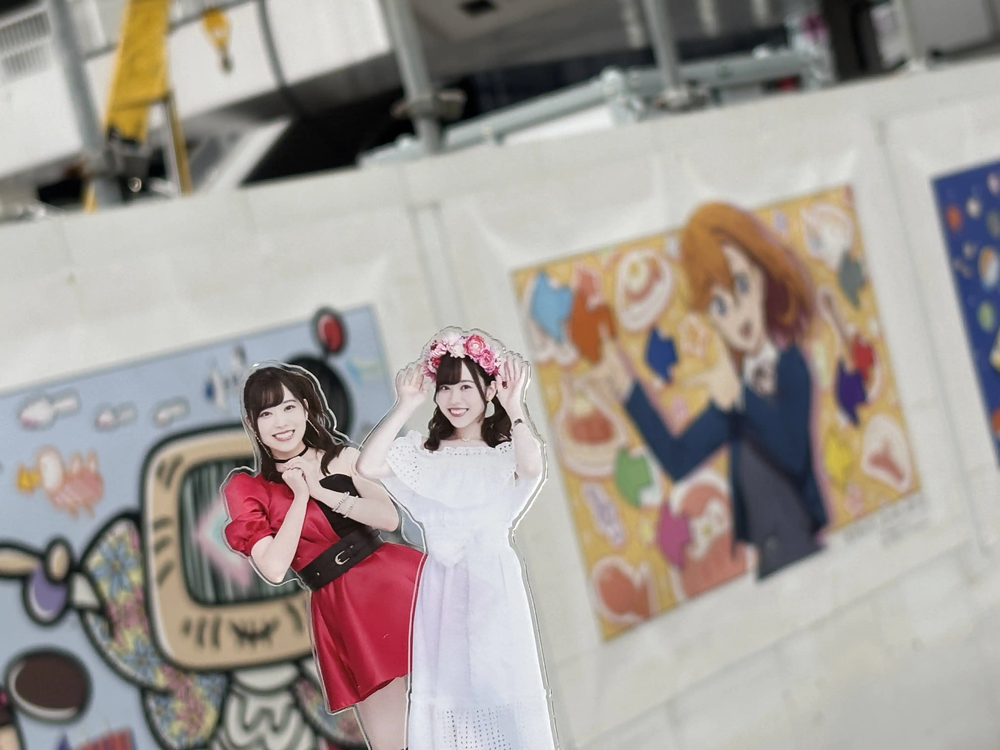
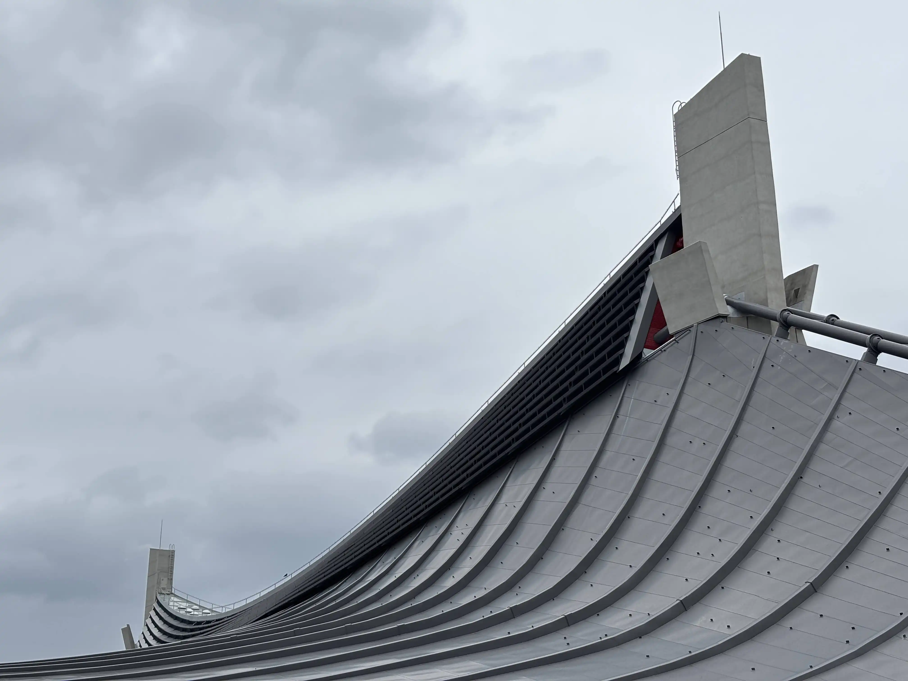
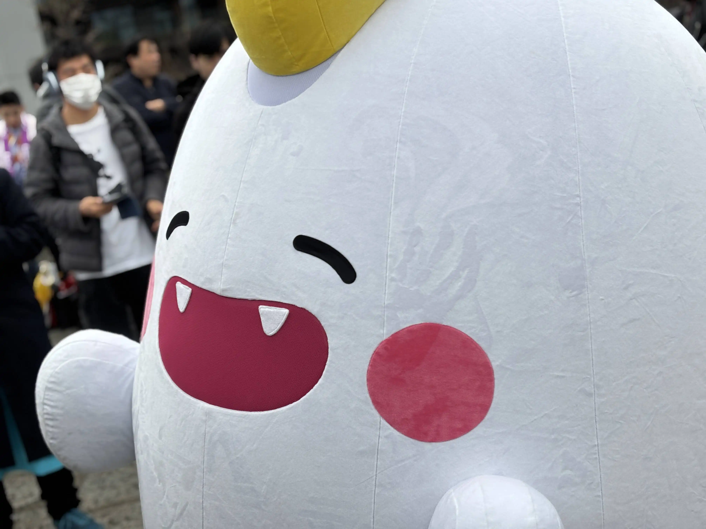
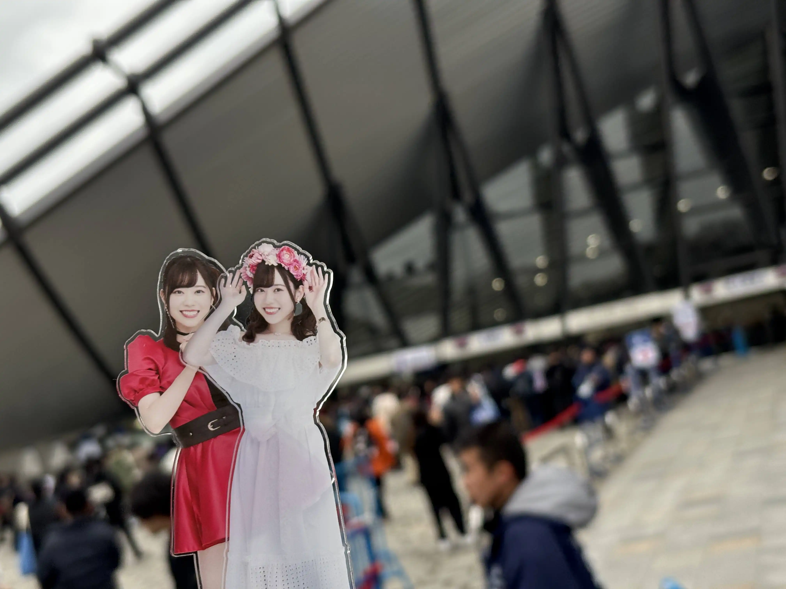
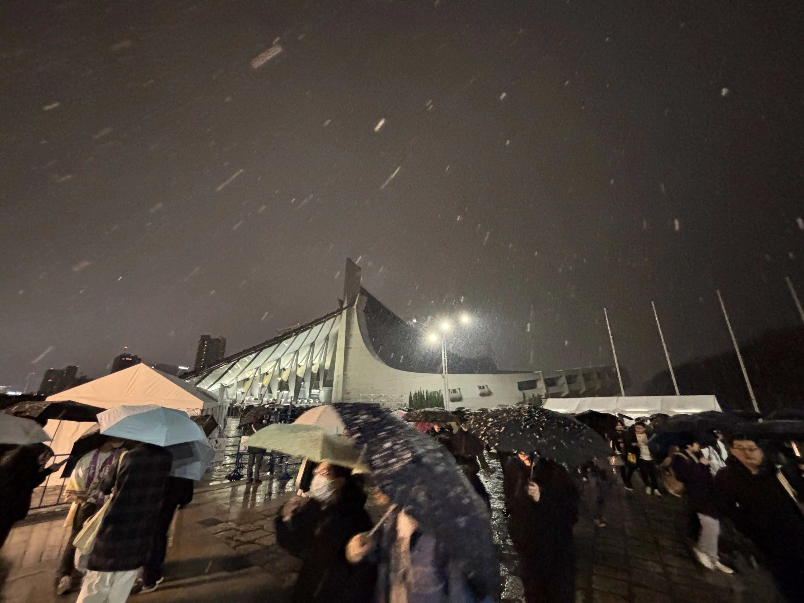
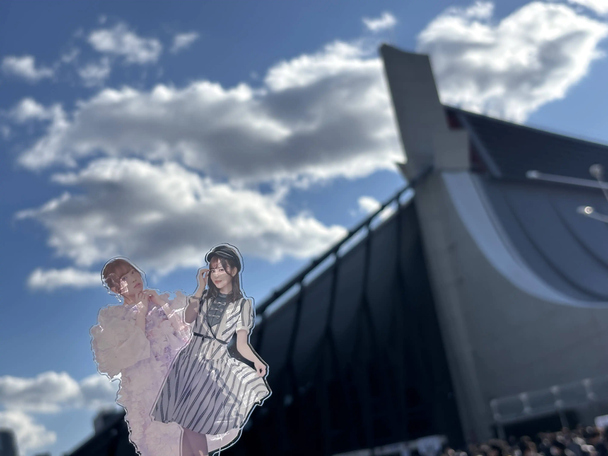

ラブライブ！スーパースター!! Liella! 6th LoveLive! Tour Let's be ONE 東京公演に参加しました。
渋谷駅で下車。
？「澁谷と言っても渋谷は苦手。」
見慣れた原宿の景色を見ながら散歩をし、会場へ。
妖精ですね。間違い無い。
連番者を待ってから入場する事に。
元々気温が低い中、雨が降ってきて凍えていましたが、なんとか入場。
ライブが終わり退場した所、雪が降っていました。
2日目。
昨日から変わった事としては、気温が高くなり半袖でも過ごしやすい天気になった、4連番が3連番になった、アリーナ席からスタンド席になったといった所でしょうか。
両日通して参加をしましたが、正直セットリスト的には消化不良な部分があると感じてしまいました。
というのもアンコール曲で所謂強い曲、「START!! True dreams」や「ビタミンSUMMER!」、「TO BE CONTINUED」などが無いのは少しなあと…。
あとは単純に1日目は寒く、2日目は直前に食事をとってしまい、満足するまでコールが出来なかった所がありますね。
しかしながら、2日目のアンコール曲「シェキラ☆☆☆」は非常に楽しかったので、今後に期待。
なんだかんだ書いていますが良かったですよ。